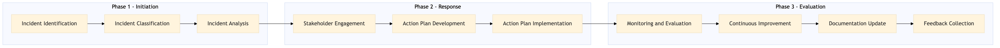

This process document outlines the steps for conducting a post-incident debrief and programme update within the TMC Duty of Care and Risk Management domain, focusing on Traveller Tracking and Safety.
| Trigger | An incident involving traveller safety or tracking is resolved. |
| Outcome | A comprehensive review of the incident leads to actionable improvements in the traveller tracking and safety programme, enhancing overall risk management practices. |
| Systems | Concur T2 Concur Expense AWS SageMaker Snowflake Kafka Tableau Salesforce Cvent Amex Corporate Card S/4HANA Workday Analytics Cloud |

Click to enlarge
| Step | Name & Pain Point | Role | System | Input | Output | KPI | Flags |
|---|---|---|---|---|---|---|---|
| 1.1 | Incident Identification Delayed identification of incidents | Duty of Care Manager | Concur T2, Concur Expense | Incident report | Confirmed incident details | Time to identify incident | ⚠ Exception |
| 1.2 | Incident Classification Inaccurate categorization leading to ineffective response | Risk Analyst | AWS SageMaker, Snowflake | Confirmed incident details | Incident classification report | Accuracy of classification | |
| 1.3 | Incident Analysis Lack of thorough investigation | Data Analyst | Kafka, Tableau | Incident classification report | Root cause analysis report | Time to complete analysis | |
| 1.4 | Stakeholder Engagement Insufficient stakeholder involvement | Project Manager | Salesforce, Cvent | Root cause analysis report | Engagement summary | Number of stakeholders engaged | ◆ Decision |
| 1.5 | Action Plan Development Lack of actionable steps | Risk Manager | S/4HANA, Workday | Engagement summary | Action plan document | Number of action items identified | |
| 1.6 | Action Plan Implementation Slow response to identified issues | Operations Team | Concur T2, Concur Expense | Action plan document | Implementation status report | Time to implement action plan | ◆ Decision |
| 1.7 | Monitoring and Evaluation Poor outcomes from implemented actions | Quality Assurance Manager | Snowflake, Tableau | Implementation status report | Evaluation report | Effectiveness of action plan | |
| 1.8 | Continuous Improvement Lack of ongoing enhancements | Duty of Care Manager | Analytics Cloud, Workday | Evaluation report | Updated programme document | Number of improvements made | ◆ Decision |
| 1.9 | Documentation Update Stale information affecting travellers | Content Manager | Salesforce, TravelAds | Updated programme document | Published updates | Time to update documentation | |
| 1.10 | Feedback Collection Insufficient feedback for continuous improvement | Customer Experience Manager | Cvent, Amex Corporate Card | Published updates | Feedback summary | Number of feedback received | ◆ Decision |